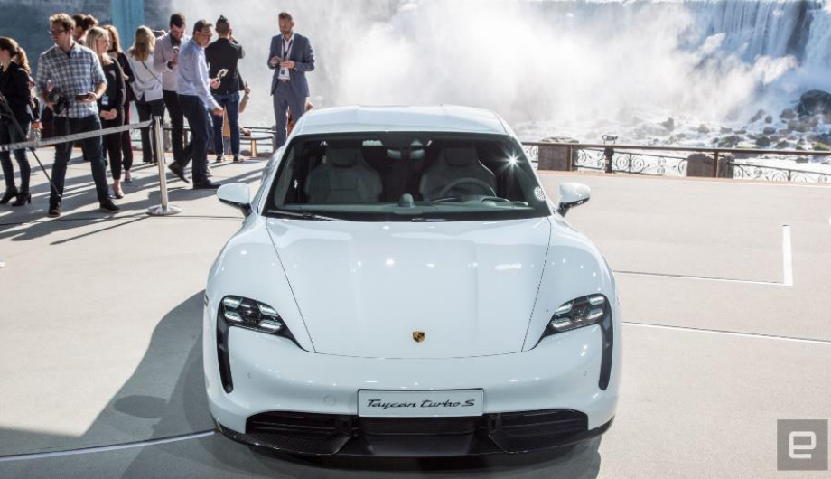

Recently,
Ahead of the Tesla run, I sat down with Porsche's North America CEO, Klaus Zellmer, to talk
rivalries, where the
"Many people are talking about competition and all that. We love competition. We come from
the racetrack. The Nurburgring; we love that environment. But first and foremost, we want to
present an alternative, carrying the badge Porsche and the brand promise -- to everything that
is electric out there right now." Zellmer said.
Apple never showed intentions of racing the Nexus 7to the bottom in the tablet game, and the iPhone 5c is proof that it won't do that in the phone arena, either.
Kebudayaan Indonesia yang multikultur seperti itu, ketika dikaji dari sisi dimensi waktu, dapat dibagi pula pengertiannya :
Adapun Pengaruh Positif dapat berupa :
| DATA | JANUARI | TOTAL MASUK |
FEBRUARI | TOTAL MASUK |
KELUAR | TOTAL | |
|---|---|---|---|---|---|---|---|
| JANUARI | FEBRUARI | ||||||
| TOTAL | |||||||
| FORM INPUT SISWA | ||
|---|---|---|
| Nama | : | |
| Tempat Lahir | : | |
| Jenis Kelamin | : |
Laki-Laki Perempuan |
| Kelas | : | |
| Hobi | : |
Olahraga
Musik Logik Bahasa |
| Alamat | : | |